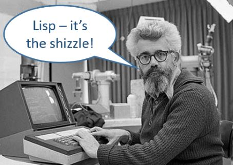
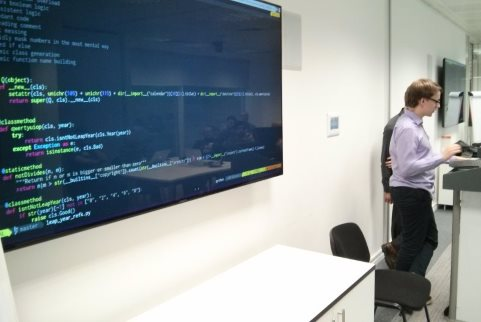
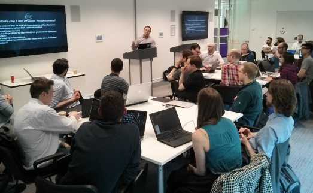
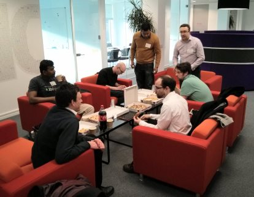
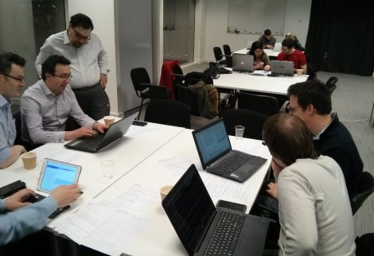
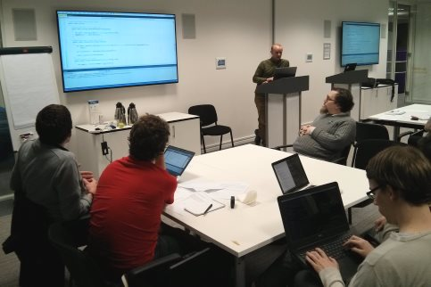
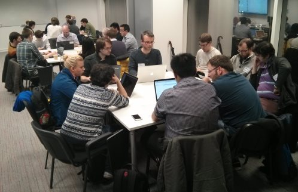

Coding Problems: CodinGame - Wednesday 7th September 2016
Following on from our previous Coding Problems sessions (Euler and Rosalind), with their more traditional format, this time we looked at one of the new wave of programming problem sites. Instead of coding algorithms to calculate the answers to set problems, CodingGame sees you implementing bots and AI which participate in dynamic games, in real-time, with some nice visualisations to go with them.
It was an interesting session - most people did the tutorial exercise then went onto one of the more difficult problems, and later on most of the group got involved in some multiplayer coding challenges, which were a lot of fun. CodinGame - it's the future!
Try a Language: Scheme - Wednesday 3rd August 2016
This month we had a go at Scheme, a kind of Lisp, introduced in 1975 but still popular as a teaching language and the basis of some modern languages including Clojure and Racket.
Twenty-two people turned up to listen to a brief history and introduction to Lisp and Scheme, before working through some exercises designed to teach the language from scratch. It took a while to get used to the parentheses, but by the end everyone was getting into it, cons'ing, car'ing and cdr'ing their way through recursive lists like champs!
The slides and exercises, as well as some solutions, are up on github.
Birthday Refuctoring - Wednesday 1st June 2016
In this session, the group coded up a well-structured Leap Year Algorithm before refuctoring the bejesus out of it in the funniest, cleverest ways they could imagine!
It was a good turnout, with 20-odd coders abusing a variety of languages including Python, C#, Java and Scheme.
Go and have a look at some of the solutions on github - if you dare!
Dynamic Programming Kata - Wednesday 4th May 2016
This month, Regular LCD'er, Bioinformatics problem-solver and Google Code competitor Andy Bowes gave us the low-down on the Dymanic Programming technique which he has put to good use in some of his problem solving.
After a brief introduction by Andy featuring some nice examples, we worked in pairs to put the tequnique to work solving problems including the Coin Change problem and the Optimum Path problem.
Despite the fairly advanced nature of the tequnique, with Andy's help pretty much everyone got a working solution to the first problem, with one pair almost finishing three. Languages used included Kotlin, F#, JavaScript, Scheme, Haskell and C++.
You can find the slides, problems and solutions on github.
Return of the TDD Kata - Wednesday 6th April 2016
For April's session we returned to our roots with a good old TDD Kata, whereby we worked on a problem using Test Driven Development and Pair Programming. The problem we used was based on Numbers in Words, which involves converting an integer to it's written English equivalent. (Or French equivalent, as one particularly fearless pair attempted!)
Despite bad weather there was a fair turnout, and a few new people turned up which is always good. Languages used were Kotlin, C#, Ruby, JavaScript, Scheme and Haskell.
The solutions from the night can be found on github.
Try a Language: APL - Wednesday 2nd March 2016
This month we moved away from your fancy modern languages, and took a trip back to a simpler time when the only data type was the multidimensional array and you had to enter programs using a special keyboard. Did I say simpler time? Let's just say a different time..
Although APL is quite different to what most of us code in nowadays, many languages have similar roots, although the main reason for giving it a try is to open your mind to the possibilities that different kinds of programming present. Also, when you can write a program to find prime numbers in 17 characters, it's killer for code golf! (In case you're wondering, '(~R∊R∘.×R)/R←1↓ιR').
Regular LCD'er Darren Drapkin explained the language history and basics to us, then we went through some 'getting started' exercises before trying to tackle a couple of the Project Euler exercises. While these are fairly suitable for APL, being optimised for maths-based algorithms, getting into the APL midset was quite challenging in the time we had. Even so, most of the group managed to get through at least one of the problems, which I'm counting as a success!
The documentation and exercises are on github.
Google Jammin' - Wednesday 3rd February 2016
With the 2016 edition of Google's popular coding contest Google Code Jam opening in March, we had a look at the setup of the contest and had a go at a couple of problems from previous years.
Despite the last-minute announcement, there was a fair turnout, with solutions in the usual languages - C#, F#, Elixir, Python, and C++.
Some of the solutions are up on github.
Coding Problems: Rosalind - Wednesday 6th January 2016
To kick off 2016, we had a look at another set of online coding problems, this time in the form of Rosalind. This site, named after Rosalind Franklin, is dedicated to bioinformatics-based problems. Similar to Project Euler, the problems start off easy and get progressivly harder, and with the badges and achievements can prove similarly addictive!
Most people got a few problems solved, and there was a good mix of languages including F#, Java, Haskell, Python, C#, JavasScript, C, C++ and Ruby! There was even some functional Java, which apparently is no longer an oxymoron.
Some of the solutions are up on github.
Try a Language: Elixir - Wednesday 2nd December 2015
In the second of our 'try a language' series, Phil Helliwell showed us around another functional language, this time in the form of Elixir.
According to the website, "Elixir is a dynamic, functional language designed for building scalable and maintainable applications. Elixir leverages the Erlang VM, known for running low-latency, distributed and fault-tolerant systems."
Phil gave us a brief overview, after which we worked through a set of exercises he designed, culminating in the creation of a text-based Multi User Dungeon. It was a very well put-together dojo, helping beginners with a gentle introduction while having the scope for more advanced coders to get really stuck in, while showing off the good bits of the language.
I'm not sure if it was Phil, Elixir or just a general growing interest, but we had another record turnout with 25-odd coders, which is great to see. Hopefully the trend will continue next year!
Phil's slides and exercises, and some of the solutions, are up on github.
The Paxos Participation - Wednesday 4th November 2015
In this session, David Turner put together the challenge of a team-based implementation of the Paxos algorithm, a protocol for solving consensus in a network of unreliable processors.
There were three types of actor to implement - proposers, acceptors and learners - with coders working in pairs to implement each. Dave had created a server which worked using basic HTTP requests, as well as skeletons in a variety of languages - we had solutions in Ruby, F#, C#, Haskell and Python.
Some of the solutions, as well as Dave's examples, skeletons and server code can be found on github.
ASCII Fractals - Wednesday 7th October 2015
This month, David Betteridge guided us through the process of creating fractal images based on the Mandelbrot Set, displaying them using that format so close to the programmer - ASCII characters.
It was a great turnout, and there were solutions created in Scheme, Haskell, C#, Ruby and Python. Everyone managed to get the basics up, and some even got their implemenations zooming, panning and rotating around the image!
The code is almost as beautiful as the fractals themselves... Check it out on github!
Core Wars - Wednesday 2nd September 2015
We took a dive down to the lowest of levels this month, using assembly language to code up warriors to compete in a Core War!
Another capacity turnout came to take part, with no previous knowledge of the Redcode assembly language used, yet all teams managed to get a working bot together to compete in the big tournament.
Strategies ranged from simple Imps all the way to an ambitious Vampire, with final victory going to Gordon and Geoff's Black Knight, a self-replicating Bomber.
Never has a group of people had so much fun watching a block of memory!
The bots, along with links and documentation, are on github.
Make it Run, Make it Right - Wednesday 5th August 2015
This time we went back to TDD, specifically the different strategies available in the 'make it run, make it right' phase as described by Kent Beck in TDD by Example. (For more details, check out my blog post about it.)
The problem we tacked was implementing a Simple Prefix Calculator, which seemed to provide a good level of challenge for everyone.
It was another record turnout at LCD with over 20 people participating, which was great to see! As expected a number of languages were being used including C#, Python, JavaScript, Haskell and Ruby. Astonishingly, there was no F# or Scheme in sight!
As usual, the solutions can be found on github.
Birthday Golf - Wednesday 1st July 2015
To celebrate our first year of existence, we returned to one of the most fun sessions from the previous year, Code Golf, where the objective is to code a solution in the smallest possible number of characters.
We did two problems, namely printing out the lyrics to 'Happy Birthday Leeds Code Dojo' as a warm-up, then a slightly more involved one involving calculating the length of a Collatz sequence.
There were a variety of languages including C, Haskell, R, JavaScript, Ruby, Python, C# and GolfScript (with some teams even switching languages for the second problem). There were some truly ingenious solutions, with perhaps the best (although in something of a grey area rules-wise) involving using the unary number scheme to get down to 44 bytes!
The solutions are on github, with the slides on Prezi.
Try a Language: F# - Wednesday 3rd June 2015
In a variation on our normal format, in this session we all put down our usual programming tools of choice and had a go at F#, .Net's functional language.
I gave an overview of the language and Chris Dobson put together some interesting exercises based on creating 3D objects, which certainly helped make learning fun!
There was a good turnout of 20-odd people, and most seemed to enjoy the it, so we might do more 'try a language' sessions in the future. If you'd like to come and guide us through your favourite language, get in touch!
The slides and exercises, as well as some people's solutions, are on github.

Take it to the Bank - Wednesday 6th May 2015
This month, we had a go at the Bank OCR Kata, closely based on the oringinal problem from codingdojo.org.
It was a fairly difficult problem with four distinct sections, but many pairs managed to get the first three finished. It was also a challange to tackle with TDD, because it was often difficult to identify and take small steps - but a good learning experience. At least one coder finished off part 4 afterwards!
There were solutions in Elixir, F#, Java, Haskell, Python and C#. Some of them can be found on github.
Coding Problems: Project Euler - Wednesday 1st April 2015
There are many ways to get better at coding, but a sure bet is to have a go at some coding problems. And as collections of coding problems go, they don't get much more classic than Project Euler!
Project Euler is a website which contains several hundred maths-oriented programming problems, arranged roughly from easiest to hardest. It takes it's name from Leonhard Euler
In April's session, we had a go at some of the problems using Java, F#, Haskell, Scheme and more. There was head scratching, there was googling, there were all sorts of ways to generate prime numbers, but most importantly there was fun!
Go and check out the solutions on github to see the results.

Recursion: See Recursion - Wednesday 4th March 2015
In this session, we had a crack at writing some recursive algorithms, commonly used in functional programming but also a good fit for many typical problems.
There were a variety of exercises for different levels of familiarity with recursion, from summing a list of numbers through to tail-call-optimised continuation-based mind-benders!
The group got on well, with everyone getting the hang of the basics of recursion and several pairs doing the more advanced exercises.
The slides are on prezi, and the solutions are up on github, as usual.

Checkout Kata - The Redoux! - Wednesday 4th February 2015
For our second session of 2015, we had another go at the Checkout Kata. Since most of the group had done it before, this gave people a chance to try something different - an alternative approach to the problem, a new language, a different coding partner, and so on.
There was a great mix of languages, including a Leeds Code Dojo first appearance for Elixir and Go, with Scala, F#, Haskell and C# also on show.
Some interesting solutions got coded up, and Adam and Matt even managed to get the extended requirements working with their Scala implementation.
Go and check out the solutions on github.
Checkout Kata - Wednesday 7th January 2015
To kick 2015 off, we had a go at the Checkout Kata, a classic TDD problem with a variety of possible implementations.
It was our best turnout so far with 20 people, and as usual we had a good variety of languages present - JavaScript, F#, Haskell, Lisp, Java, and C# - and quite a few people tried something new.
There were a good variety of solutions implemented, with the discounts being calculated using pure maths, arrays of functions, pattern matching, objects, and more. Variety, as they say, is the spice of life!
The github repo from the night has a few of the solutions, why not take a look!

Refuctoring - Wednesday 3rd December 2014
In this session, the group enjoyed coding up a nice, clean solution to FizzBuzz before mercilessly refuctoring it into an unrecognisable pile of tangled ASCII! (Or in some cases, Unicode..)
The solutions started out in Java, C#, F# and Haskell, but by the end could barely have been recognised as such by the language designers themselves. There were many devious crimes against programming such as code which would only work one day of the month, source written in a variety of Unicode symbols, y-combinator abominations and plain old bad naming.
We learned a few things about programming, and more importantly, had a lot of fun.
Go and have a look at some of the solutions on github - if you dare!

The Pipe Packing Challenge - Thursday 6th November 2014
In a coding session that took inspiration from the last leeds sharp session, five pairs of us wrote algorithms to try and solve a simplified version of the bin packing problem.
There were once again many languages in effect - Erlang, F#, C# and Haskell - and all of the pairs had a working solution by the end. Most ended up with a 'First Fit' algorithm, which does a pretty good job of finding a solution to this NP-Hard problem without taking the age of the universe to run..
Most of the solutions are up on github - go check them out!

Build you a Skynet - Wednesday 1st October 2014
We worked in twos and threes to write Machine Learning algorithms based on the k-nearest neighbours algorithm. The group did well, with almost everyone getting a working solution, and some teams getting to over 90% accuracy with their digit classification!
There were several languages in use - F#, Objective C, Scala, C#, and Python, and again a few people got involved with a new language, well done to them.
Have a look at some of the solutions on github.

Word Wrap Kata - Wednesday 3rd September 2014
We paired up to tackle another problem using TDD and Pair Programming, this time looking at implementing a Word Wrap algorithm. This takes a line of text and wraps it to a certain length - similar to how Notepad and other text editors work.
As usual, there were several languages in use - C#, Python, and PHP, with a couple of folk trying out something new. We also tried out the 'test list' technique, where you maintain a list of tests throughout the session, crossing them off and adding more as you go.
The problem proved fairly interesting, with a few different techniques emerging - recursion seemed to work well and produce fairly simple solutions, and some people chose to return collections of strings with others going for a block of text. The initial choice of test (and therefore implementation path) seemed to have quite a bit impact on how easy it was to get to a working solution.
Go and see the solutions on github

Fore! A nice round of Code Golf: Tuesday 5th August 2014
We had a great round of code golf, with several languages represented - C#, Ruby, Python and Haskell. We coded up solutions to output the '99 bottles' song, then made them as small as possible!
As you might predict, the Ruby and Python solutions were initially much smaller at 400-odd characters, but it was quite a struggle to get them down to the ultimate winner at 257 characters. The C# and Haskell solutions on the other hand started out much larger at 1000-plus chars, but ended up only 50 or so characters behind the scripting languages. It was an exciting race to the finish line!
A couple of the solutions are up on github - go and be impressed!

The Dojo Opens: Wednesday 9th July 2014
The first Leeds Code Dojo went really well – 17 people joined in, from a variety of different backgrounds and of various skill levels, so a great response. The Callcredit boardroom was pretty much at capacity, we might need to get a bigger room for the next one!
We worked in pairs on the ‘Kata Potter’ programming problem, practising the skills of TDD and Pair Programming. It was great to see a number of languages being used, including C#, F#, Ruby, Python, and PHP, with a few people trying out a new language for the first time.
Several of the solutions are up on github - go check them out!